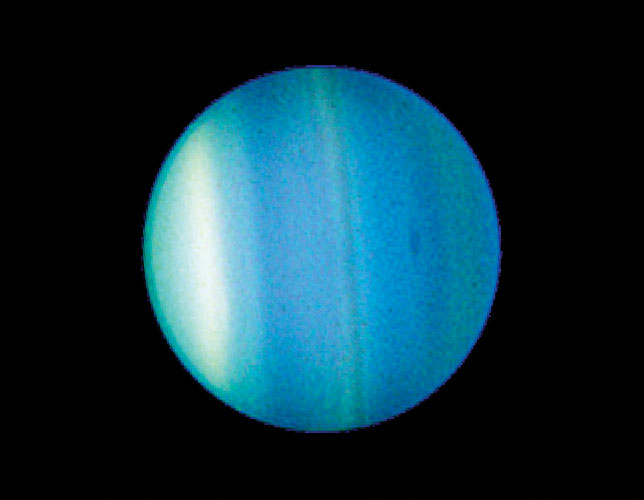

El primer planeta encontrado con la ayuda de un telescopio, Urano fue descubierto en 1781 por el astrónomo William Herschel (oficialmente), aunque originalmente pensó que era un cometa o una estrella. Dos años más tarde, el objeto fue aceptado universalmente como un nuevo planeta, en parte debido a las observaciones del astrónomo Johann Elert Bode.
Herschel intentó, sin éxito, nombrar a su descubrimiento Georgium Sidus como el rey Jorge III. En cambio, el planeta recibió su nombre por Urano, el dios griego del cielo, como lo sugirió Johann Bode.
Urano tomó forma al mismo tiempo que el resto del sistema solar, hace unos 4.500 millones de años, cuando la gravedad arrastró gas y polvo para convertirse en este gigante de hielo. Al igual que su vecino Neptuno, Urano probablemente se formó más cerca del Sol y se trasladó al sistema solar exterior hace unos 4 mil millones de años.
Ahora le contaremos 10 datos más sobre Urano que le harán conocer mejor a este planeta con una característica única en el sistema solar.

1. Es ENORME
Urano es aproximadamente cuatro veces más ancho que la Tierra, con un radio de 25,362 kilómetros. Si la Tierra fuera una manzana grande, Urano sería del tamaño de una pelota de baloncesto.
2. El séptimo jugador
Urano orbita alrededor de nuestro Sol, una estrella, y es el séptimo planeta desde el Sol a una distancia de aproximadamente 2.900 millones de kilómetros (1.800 millones de millas).
En términos astronómicos, Urano se encuentra a 19.8 unidades astronómicas del Sol. Una unidad astronómica (abreviada como AU), es la distancia del Sol a la Tierra.
3. Día corto, año largo
Urano tarda aproximadamente 17 horas en rotar una vez (un día uraniano), y unos 84 años terrestres para completar una órbita del Sol (un año uraniano).
4. Hielo gigante
Urano es un gigante de hielo. La mayor parte de su masa es un fluido denso y caliente de materiales "helados" (agua, metano y amoníaco) sobre un pequeño núcleo rocoso.
5. Gaseoso
Urano tiene una atmósfera compuesta principalmente de hidrógeno molecular y helio atómico, con una pequeña cantidad de metano.
6. Muchas lunas
Urano tiene 27 lunas conocidas, y llevan el nombre de personajes de las obras de William Shakespeare y Alexander Pope.
7. El otro mundo con anillos
Urano tiene 13 anillos conocidos. Los anillos interiores son estrechos y oscuros y los anillos externos son de colores brillantes.
8. Un poco solo
La Voyager 2 es la única nave espacial que vuela por Urano. Ninguna nave espacial ha orbitado este planeta distante para estudiarlo a fondo y de cerca.
9. Sin vida
Urano no puede soportar la vida como la conocemos.
10. Va a su ‘bola’
Al igual que Venus, Urano gira de este a oeste. Pero Urano es único en que gira de lado. Es el único planeta cuyo ecuador está casi en ángulo recto con su órbita, con una inclinación de 97.77 grados, posiblemente el resultado de una colisión con un objeto del tamaño de la Tierra hace mucho tiempo. Esta inclinación única causa las estaciones más extremas conocidas en el sistema solar. Durante casi un cuarto de cada año uraniano, el Sol brilla directamente sobre cada polo, hundiendo a la otra mitad del planeta en un oscuro invierno de 21 años.